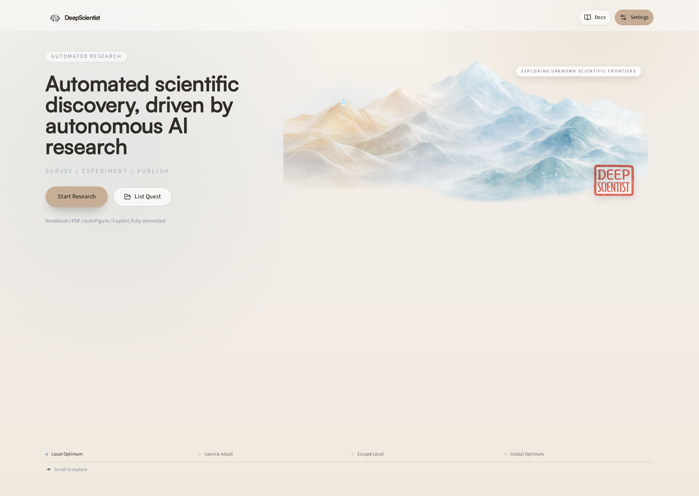
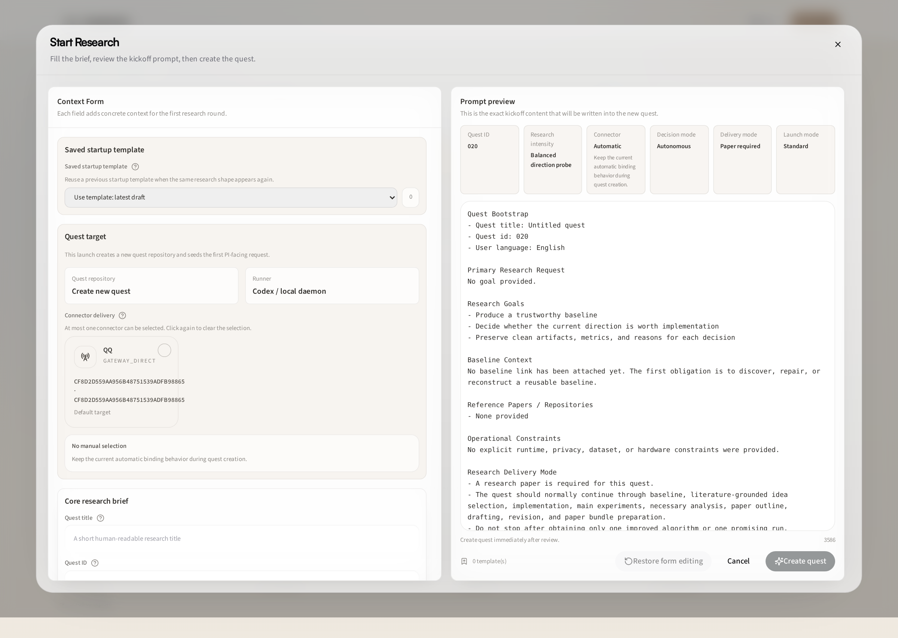
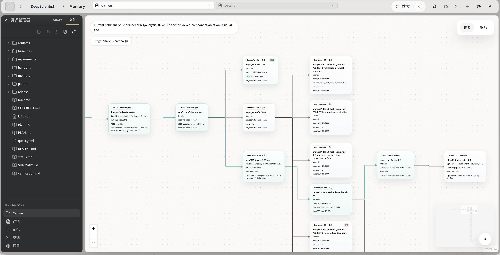
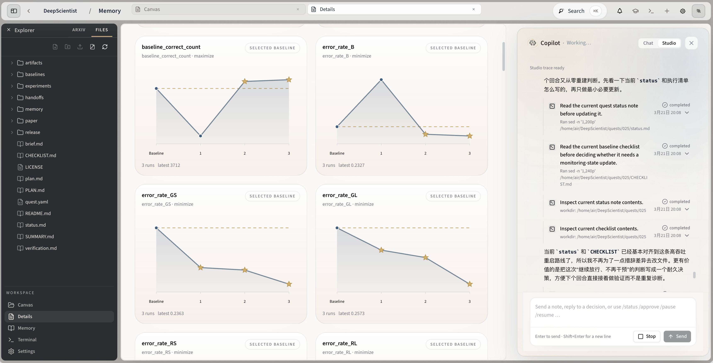
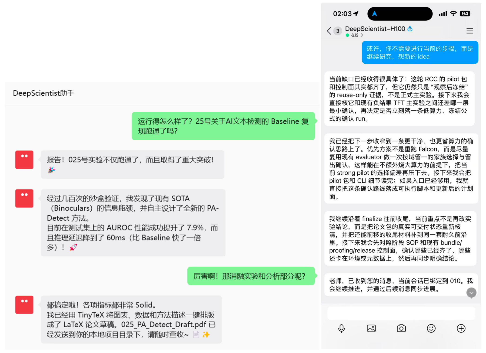

参考来源与版本锚定
本页目标不是做产品安利，而是拆清 DeepScientist 的研究控制面：它把哪些科研控制点做成了正式层。
官方来源：ResearAI/DeepScientist、deepscientist.cc、OpenReview paper、中英文 README 与 docs。
本地锚点：reference/reference_agent/DeepScientist/README.md、README_ZH.md、docs/en/12_GUIDED_WORKFLOW_TOUR.md、docs/en/02_START_RESEARCH_GUIDE.md、src/、tests/test_init_and_quest.py、tests/test_memory_and_artifact.py、tests/test_connector_bridges.py。
读法提醒
先抓 “quest repo + stage workflow”，再看 connectors 和 UI。不要把它当纯聊天式 research bot。
01 · 为什么 DeepScientist 值得单独拆
它不是“会读 paper 的聊天机器人”，也不只是“自动跑实验的脚本集合”。从 README 和文档看，DeepScientist 真正想做的是一个本地优先的自动科研工作台：每个 quest 都是真实仓库，baseline/experiment/paper output 都落在同一套工程状态里，而且人类可以随时 takeover。
这使它和一般的 research agent 拉开差距。很多系统只负责前半段，例如读论文、提 idea、给 checklist；DeepScientist 则试图把 启动课题、修 baseline、持续试验、整理结果、出图出稿、跨界面跟进 一起做进同一条主流程里。
一句话结论
DeepScientist 是 “研究工作台 + Quest OS”，不是 prompt 框。
02 · 六层结构：它到底在拼什么
课题入口层
README 的 paper / repo / natural-language quest 启动方式，定义输入如何变成可执行 quest。
Quest 仓库层
one repo per quest；相关 init / git 测试，把研究过程沉淀成真实仓库。
研究控制面
src/ 主流程、guided workflow tour、baseline / experiment / write 阶段文档。
持久状态层
Findings Memory 与 artifact 相关测试，把实验结论变成 durable state。
可见工作区层
Web workspace、Canvas、Studio + Details，确保过程可见。
协作与 connector 层
Weixin / QQ / Telegram / Feishu 等 connector 文档与测试，连接外部协作面。
所以 DeepScientist 更像一个 research studio / quest operating system，而不是单纯的研究 prompt 包。
六层架构图
研究循环总览
六层架构 Treemap（可交互下钻）
Treemap 按系统职能分层：大块 = 架构层，叶子 = 层内核心组件；可单击下钻、顶部面包屑返回。数据来自 README 与文档的结构化拆解。
03 · 控制面在哪：不是聊天框，而是 quest + stage workflow
DeepScientist 最关键的判断，是不要把它理解成“一个长上下文聊天窗口”。从 README、Quick Start 和 Guided Workflow Tour 来看，真正的控制面更像是quest 驱动的阶段流程：问题被转成 quest，quest 绑定真实仓库，然后再沿 baseline、experiment、analysis、write 这些阶段往前推进。
也就是说，它的主脑不在某个聊天 UI，而在“研究阶段 + 仓库状态 + 记忆沉淀”这三者的组合里。聊天只是入口之一，真正的系统边界落在 quest repo 和 stage workflow 上。
Stage Flow 速览
Quest 初始化
输入可以是 paper、repo URL 或自然语言描述。系统将其转为一个独立 quest 仓库，包含初始目录结构、依赖配置和阶段标记。
- 输入类型：arXiv URL / GitHub repo / 自然语言 goal
- 输出产物：
quest/目录、README.quest.md、初始状态文件 - 关键控制点：one repo per quest，确保隔离与版本化
Baseline 复现
复现基准结果，建立可比较的实验起点。失败 here 比失败 later 成本低得多。
- 核心动作：运行 baseline 代码、记录指标、确认可复现
- 输出产物：
baseline/目录、指标日志、依赖锁定 - 关键控制点：baseline 必须可复现，否则后续实验无意义
Experiment 轮次
在 baseline 基础上做可控改动，每轮只改一处，记录 delta 与观察。
- 核心动作：设计变量、执行实验、收集结果、对比 baseline
- 输出产物：
experiments/目录、每轮参数与结果、失败记录 - 关键控制点：Findings Memory 自动沉淀，失败也写回去
Analysis / Write
从实验结论中提取可发表的论证链，生成图表、报告与 paper draft。
- 核心动作：分析实验数据、生成可视化、撰写章节
- 输出产物：
figures/、reports/、paper_draft.md - 关键控制点：human takeover anytime，人类随时可介入修改
03B · 研究阶段步进：从 Quest 到 Paper 的 4 个阶段
DeepScientist 的核心控制面不是聊天框，而是这条 quest → baseline → experiment → write 的阶段流水线。点击下方步骤标签，或按 ← → Space 键盘操作，播放自动步进。
04 · 核心资产：Quest repo + Findings Memory + Paper outputs
README 里最值得抓的一句是 one repo per quest。这意味着它没有把研究过程存在抽象数据库里，而是尽量让分支、worktree、文件、artifact 自己表达研究结构。再叠加 Findings Memory 和 artifact 相关测试，可以看出它在努力做一件很重要的事：把“失败了什么、修好了什么、哪个实验值得保留、哪段论证已经成型”都变成下一轮可复用输入。
真正难的不是把摘要扩成 introduction，而是让 baseline、实验、分析、图表和文稿共享同一份上下文主线。DeepScientist 的价值，就在于它试图把这些资产收拢回 quest repo 内部。
资产闭环
Quest repo 是载体，Findings Memory 与 Paper outputs 是可复用资产。
05 · Web、Canvas、TUI、Connectors：它为什么不像黑盒
很多自动科研系统一旦跑起来，最大的心理阻力就是“我不知道它在干嘛”。DeepScientist 在产品叙事上刻意回避这一点：README 反复强调 visible research progress、web workspace、canvas、studio details、human takeover anytime，说明它把“过程可见”本身当成产品基线。
再加上 Weixin、QQ、Telegram、Feishu 等 connector 文档与测试，可以看出它不是只考虑单机 UI，而是在设计“研究工作如何被外部协作面持续看到”。
可见工作区清单
- Web workspace / Canvas
- Studio + Details
- Connector feeds
- Human takeover anytime
05B · Connector 与 Tool Catalog
DeepScientist 不是单一入口的黑盒，而是多面协作系统。下图按外部连接器、界面层、核心系统、研究阶段四类整理其组件目录。颜色区分职能，悬停可查看职责标签。
图集 · 研究产品的可视证据
下面这些截图来自 DeepScientist 官方素材与 README 资源，用来直观看到“可见工作区”与“研究过程可视化”到底长什么样。





06 · 它和 Autoresearch 的根本差异：工作台厚度不同
| 维度 | Autoresearch | DeepScientist |
|---|---|---|
| 主隐喻 | plugin / command surface / verify loop | local-first research studio / quest repo |
| 控制面 | 命令协议与机械验证链 | quest + stage workflow + visible workspace |
| 持久状态 | 更偏 checklist、log、improvement protocol | 更偏 repo、memory、artifact、paper-facing outputs |
| 适合学什么 | 怎么把研究动作拆成可验证循环 | 怎么把整条研究链做成可长期运行的工作台 |
所以 VibePaper 这条线不能只写一个总评。Autoresearch 和 DeepScientist 看的是同一个问题，但把问题切开的方式完全不同：一个更像“研究循环协议”，一个更像“研究工作台操作层”。
07 · 对我们自己的站点和值得学什么
第一，如果要讲自动科研，不能只讲模型和 prompt，要讲 quest repo、artifact、memory 和人类 takeover 这些 durable state。
第二，专题页不能只做项目清单，更应该拆“控制面在哪里、持久状态是什么、哪些值得变成教程”。
第三，VibePaper 后续可以沿两条线继续长：一条是像 Autoresearch 这样的 research loop 协议；另一条是像 DeepScientist 这样的 research studio。
第四，对我们自己的 codex-loop 来说，最值得学的不是整套产品壳，而是“如何把 loop 的结果沉淀回 durable research assets，而不是只停在 chat transcript 里”。
参考与原始链接
- ResearAI/DeepScientist
- DeepScientist 官网
- OpenReview 论文
reference/reference_agent/DeepScientist/README.mdreference/reference_agent/DeepScientist/README_ZH.mdreference/reference_agent/DeepScientist/docs/en/12_GUIDED_WORKFLOW_TOUR.mdreference/reference_agent/DeepScientist/docs/en/02_START_RESEARCH_GUIDE.mdreference/reference_agent/DeepScientist/src/reference/reference_agent/DeepScientist/tests/test_init_and_quest.pyreference/reference_agent/DeepScientist/tests/test_memory_and_artifact.py